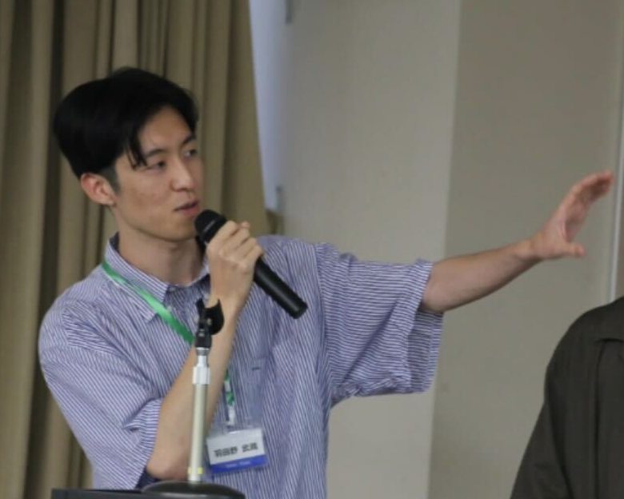

Software Engineer
羽田野 武蔵
Hadano Musashi
九州大学大学院 修士2年。
ソフトウェアエンジニアとして、バックエンドからIoTまで幅広く手がける。
About

歳。
九州大学大学院 システム情報科学府 情報理工学専攻 修士2年。
人間情報システム研究室所属。
株式会社MIXIに内定。 バックエンド開発を中心に、IoTやウェアラブルデバイスの研究にも携わっている。
趣味
- お笑い鑑賞好きなお笑い芸人は東京03。毎年欠かさず単独ライブに参戦。角田LOVE
- カメラNikon Z50II。ズームレンズを欲している。
- 本屋巡り
特技
- ナポリタンパスタ作り全般が得意だが、特にナポリタンが別格らしい。喫茶店を開きたいと思っている。
- ラテアート元カフェ店員のためラテアートが得意だと自負している。ちなみに、そのカフェは2026年1月に閉店してしまった。
- 早歩き競歩をしていたわけでも足が速いわけでもないが、デフォルトの歩きは速い。
Education
2025.04 – 2027.03（見込）
九州大学大学院 システム情報科学府
情報理工学専攻 修士課程 / 人間情報システム研究室
2023.04 – 2025.03
九州大学 工学部 電気情報工学科
計算機工学コース / 3年次編入学 / GPA 3.81 / 学科内10位
2018.04 – 2023.03
久留米工業高等専門学校 電気電子工学科
席次1位
Research
九州大学
ウェアラブルデバイスの行動データに対する
プライバシー保護に向けた研究
ウェアラブルセンサのためのプライバシーリスク抑制技術の研究。オートエンコーダを用いて、動作の「クセ」から個人が特定されるリスクを抑えつつ、歩行等の活動認識に必要な特徴のみを抽出する手法を開発。ESP32のような計算資源の限られた端末でも動作可能な低負荷設計を実現。情報処理学会＆国際学会発表、国際トップジャーナル掲載。
久留米高専（九州工業大学との共同研究）
ハードウェアに適した学習アルゴリズムのFPGA実装
従来のAIが抱える消費電力・学習時間の課題に対し、ハードウェアに適した学習アルゴリズム「DFA」をVerilogHDLによるFPGA専用回路で評価。論理ゲート型ML研究の先駆けとなる基礎技術を実証。電気学会部門大会発表。
Projects
論理ゲート型MLライブラリ
未踏IT2026 採択行列演算中心のAIを見直し、論理ゲートでNNを構成する次世代MLライブラリの開発。PyTorch風の記述で設計・学習できる「コアモジュール」と、ハードウェア用ファイル（HDL）に自動変換する「拡張モジュール」を提供。GPUに依存しないエッジAIの民主化を目指す。
自治体のお困りごと可視化マップ
福岡未踏 Solveコース採択 技育博 企業賞 × 2 VORN Challenge 優秀賞地域のお困りごとを可視化・共有するサービスの開発。2人チームのバックエンド担当として、API開発（Python/FastAPI）とインフラ構築（AWS）を担当。自治体へのヒアリングを通じた要件定義から、DB・API設計、ログ設計まで一貫して経験。
飲み促しシステム（IoT × ゲーム）
技育博 企業賞 MCPC トリリオンノード奨励賞プレイヤーの飲酒量を測り、最も飲んでいない人に罰ゲームを与えるゲーム。スマホアプリ（Flutter）とコースター（M5Stack＋重量センサー、3Dプリンタ成形）をBLEで接続。アプリのUI実装とBLE接続部分、エッジケース処理を担当。
Awards & Publications
2026.06
未踏IT2026 — 採択
2026.02
ACM Transactions on Computing for Healthcare Journal — 論文掲載
2025.10
VORN Challenge 2025 — 優秀賞
2025.09
IEEE ICMU 2025 — 口頭発表
2024.11
第84回情報処理学会UBI研究会 — ヤングリサーチャー賞
2024.09
2024年度 福岡未踏 Solveコース — 採択
2023.08
2023年 電気学会 電子・情報・システム部門大会 — 口頭発表
Experience
2026.06〜
株式会社APORON
九大発スタートアップ / 業務委託
2026.01
2025.12
（1ヶ月）
2025.10
（1ヶ月）
株式会社リクルート
バックエンドエンジニア
Java, Spring Boot
2025.08 – 09
（2ヶ月）
株式会社MIXI
ソフトウェアエンジニア
AWS, Python (Flask), LLM
2025.08
（2週間）
株式会社コロプラ
バックエンドエンジニア
PHP (Laravel)
2024.04 – 2025.03
（1年）
株式会社AAKEL
フルスタックエンジニア
TypeScript (React.js), Python (FastAPI), AWS